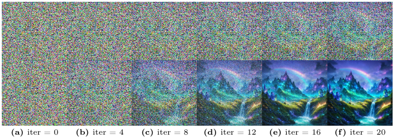

ParaFlow: Parallel Sampling for Flow Matching Models
ECCV 2026 European Conference on Computer Vision
Training-free parallel sampling for flow matching models, achieving up to 4.3× speedup on a single GPU with negligible impact on generation quality.